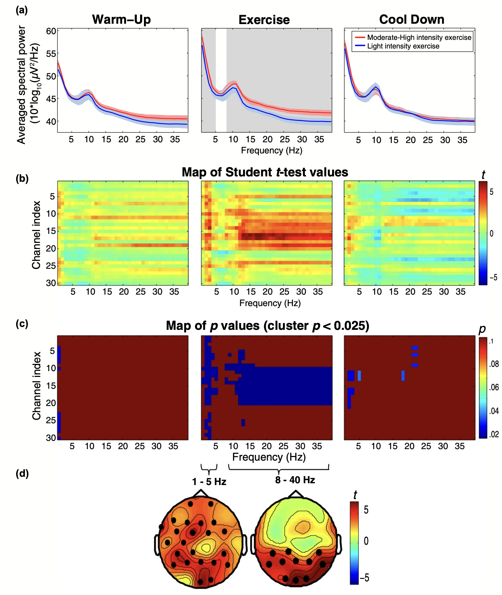

Exercise, Brain & Cognition

A substantial body of research has reported a positive association between physical exercise and cognition, although the key factors driving that link are still a matter of scientific debate. Our work focuses on elucidating how brain physiology is affected by acute and prolonged physical exercise and how exercise-induced brain changes influence cognitive performance — with a particular focus on sustained attention and cardiac interoception.
One of our key contributions, an umbrella review of randomized control trials, indicates that the current evidence of exercise-induced cognitive benefits is weak and unreliable.
Journal Articles
-
Yoris, A. E., Ciria, L. F., Luque-Casado, A., Sanabria, D., & Perakakis, P. (2024). Delving into the relationship between regular physical exercise and cardiac interoception. Neuropsychologia, 198, 108867. doi: 10.1016/j.neuropsychologia.2024.108867
Investigates whether regular aerobic exercise enhances the ability to perceive internal cardiac signals, using heartbeat detection tasks and psychophysiological measures.
-
Ciria, L. F., Román-Caballero, R., Vadillo, M. A., Holgado, D., Luque-Casado, A., Perakakis, P., & Sanabria, D. (2023). An umbrella review of randomized control trials on the effects of physical exercise on cognition. Nature Human Behaviour, 7, 928–941. doi: 10.1038/s41562-023-01554-4
A comprehensive umbrella review showing that the evidence for cognitive benefits of exercise is weaker and more heterogeneous than commonly assumed.
-
Luque-Casado, A., Ciria, L. F., Sanabria, D., & Perakakis, P. (2020). Exercise practice associates with different brain rhythmic patterns during vigilance. Physiology & Behavior, 224, 113033. doi: 10.1016/j.physbeh.2020.113033
Examines EEG activity during a sustained attention task in aerobically trained vs. sedentary adults, showing distinct oscillatory patterns linked to exercise habits.
-
Sanabria, D., Morales, E., Luque-Casado, A., González-García, C., Huertas, F., Ciria, L. F., Perakakis, P., & Salillas, E. (2019). The relationship between vigilance capacity and physical exercise: a mixed-effects multistudy analysis. PeerJ, 7, e7118. doi: 10.7717/peerj.7118
Pools data from multiple experiments to examine whether aerobic fitness is associated with superior sustained attention performance.
-
Ciria, L. F., Luque-Casado, A., Sanabria, D., Holgado, D., Ivanov, P., & Perakakis, P. (2019). Oscillatory brain activity during acute exercise: Tonic and transient neural response to an oddball task. Psychophysiology, 56, e13326. doi: 10.1111/psyp.13326
Records EEG during cycling exercise to separate tonic (sustained) from transient (stimulus-evoked) neural responses, revealing how acute physical load modulates brain activity.
-
Bailon, C., Damas, M., Pomares, H., Sanabria, D., Perakakis, P., Goicoechea, C., & Baños, O. (2018). Intelligent monitoring of affective factors underlying sport performance by means of wearable and mobile technology. Proceedings, 2(19), 1202. doi: 10.3390/proceedings2191202
Conference proceedings presenting a wearable/mobile system for real-time monitoring of affective and physiological states in athletic contexts.
-
Ciria, L. F., Perakakis, P., Luque-Casado, A., & Sanabria, D. (2018). Physical exercise increases overall brain oscillatory activity but does not influence inhibitory control in young adults. NeuroImage, 181, 203–210. doi: 10.1016/j.neuroimage.2018.07.009
EEG evidence that chronic exercise increases global brain oscillatory power without selectively enhancing inhibitory control processes.
-
Ciria, L. F., Perakakis, P., Luque-Casado, A., Morato, C., & Sanabria, D. (2017). The relationship between sustained attention and aerobic fitness in a group of young adults. PeerJ, 5, e3831. doi: 10.7717/peerj.3831
Cross-sectional study in young adults examining correlations between aerobic fitness (VO₂max) and sustained attention performance during a monotonous vigilance task.
-
Holgado, D., Zandonai, T., Zabala, M., Hopker, J., Perakakis, P., Luque-Casado, A., Ciria, L. F., Guerra-Hernandez, E., & Sanabria, D. (2017). Tramadol effects on physical performance and sustained attention during a 20-min indoor cycling time-trial: A randomised controlled trial. Journal of Science and Medicine in Sport, 21, 654–660. doi: 10.1016/j.jsams.2017.09.593
A randomised controlled trial assessing whether tramadol, a pain-modulating drug, affects cycling performance and cognitive vigilance during prolonged effort.
-
Luque-Casado, A., Perakakis, P., Ciria, L. F., & Sanabria, D. (2016). Transient autonomic responses during sustained attention in high and low fit young adults. Scientific Reports, 6, 27556. doi: 10.1038/srep27556
Shows that aerobically fit individuals exhibit distinct autonomic response patterns during prolonged vigilance tasks compared to sedentary controls.
-
Luque-Casado, A., Perakakis, P., Hillman, C. H., Kao, S. C., Llorens, F., Guerra, P., & Sanabria, D. (2016). Differences in sustained attention capacity as a function of aerobic fitness. Medicine and Science in Sport and Exercise, 48(5), 887–895. doi: 10.1249/MSS.0000000000000857
Compares sustained attention performance and ERP components between high-fit and low-fit young adults during a prolonged psychomotor vigilance task.
In the News
-
Exercise is actually good for the brain — but the details are murky
Coverage of the umbrella review on exercise and cognition published in Nature Human Behaviour.
-
Interview with Daniel Sanabria discussing the lab's research on exercise, cognition, and the limits of scientific claims.
-
News coverage of findings on aerobic fitness and sustained attention.
-
Las personas que hacen ejercicio aeróbico regular mantienen mejor la atención
Press release on the lab's research linking aerobic fitness to sustained attention capacity.